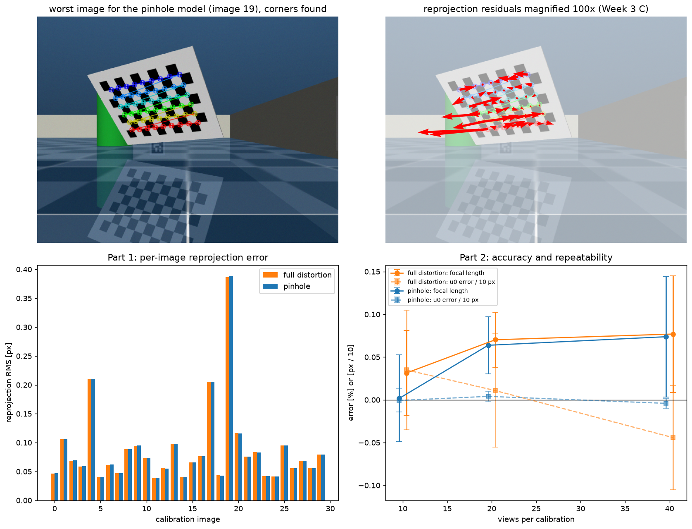
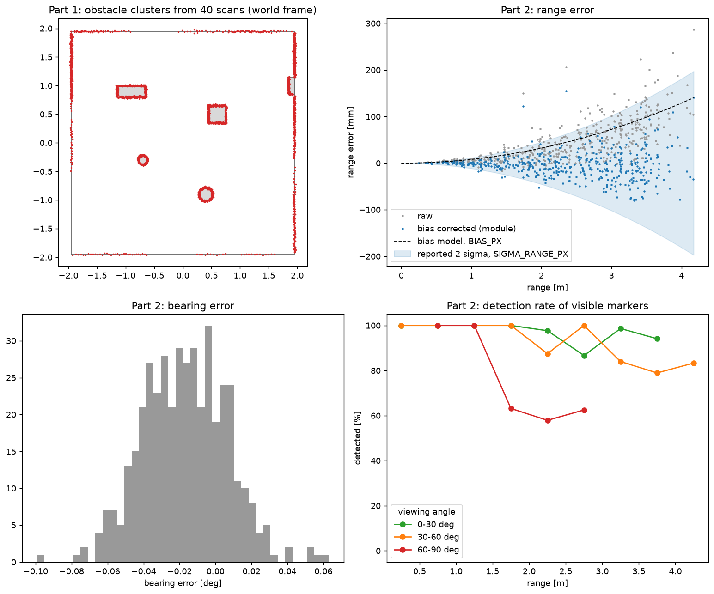
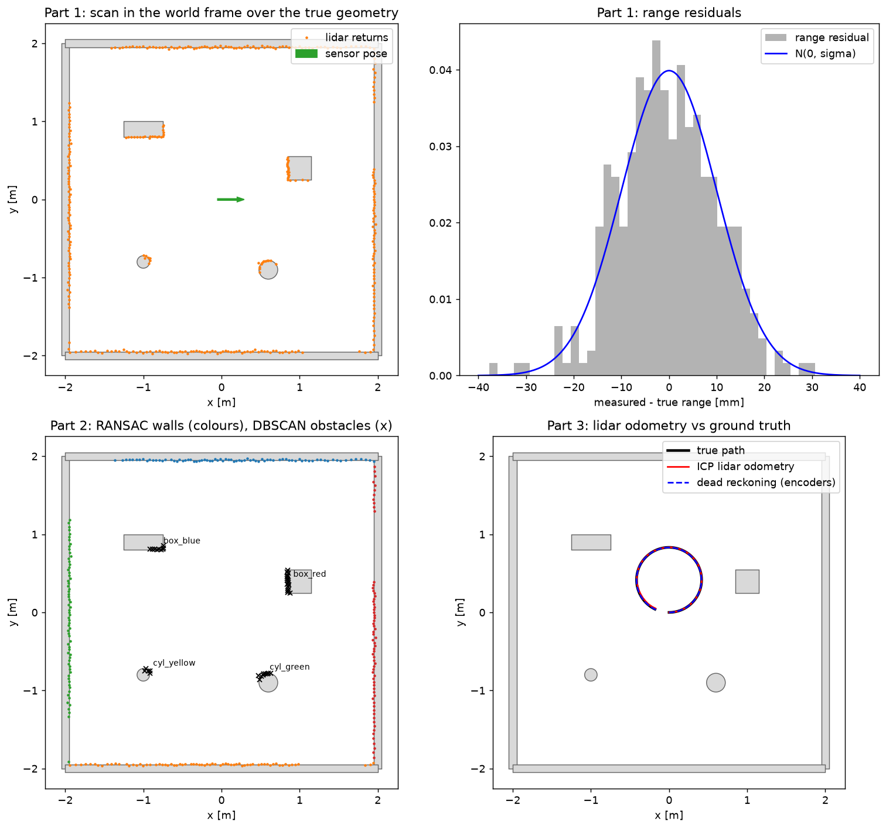

Camera calibration and its checks (Week 3 B, C), ArUco detection and PnP pose (Week 3 E), the range-and-bearing
noise model (Week 3 wrap-up), LiDAR point clouds, RANSAC, DBSCAN and ICP (Week 4, Part 5 + Bonus), and the
range-bearing measurement \(h_{rb}\) (Week 7 C.4).
Code: src/perception/perception.py,
calibration.py.
Evaluated by tests/test_calibration.py and tests/test_perception.py (500 random poses per seed).
1. Frames and how they were checked

| Frame | Definition | Where it comes from |
|---|---|---|
| {A} | reference marker's floor frame: origin below the marker centre, x out of the wall into the room, y to the left | the robot's working frame - the estimate, LiDAR map and every path are in {A} |
| {D} | dock marker | DOCK_OFFSET in {A}: (3.790 m, 1.800 m, 180°). Measured with a tape on hardware |
| {R} | robot: on the floor between the wheels, x forward, y left, z up | the EKF state x̂ = (x, y, θ) is {R} in {A} |
| {S} | LiDAR scan origin | TRS = (−0.049, 0, 0.1255) m; beam angle 0 = xR, counter-clockwise positive |
| {C} | camera, optical convention (z forward, y down) | TRC = (0.0855, 0, 0.107) m with zC = xR, xC = −yR |
| {M} | each detected marker | PnP gives TCM; TRM = TRCTCM gives range and bearing from the robot origin (Week 7 hrb) |
| {W} | simulator world | EVALUATION ONLY: estimates are mapped through marker 1's true pose to compare with ground truth |
Both mounts were verified rather than just written down:
- LiDAR mount: range residuals against Week 4 analytic ray casting have mean −0.32 mm and std 10.08 mm against the 10 mm noise, with no beam beyond 5σ. RANSAC walls land within 2.5 mm and 0.10°. This confirms TRS and the beam angle convention.
- Camera mount: recovered from the calibration poses, the camera position is within (−1.1, +0.3, −0.2) mm (scatter 1.0 mm per view) and the orientation within 0.07° (worst view 0.40°).
2. Camera calibration (Week 3 B, C)
Setup: A checkerboard with 9×6 internal corners and 40 mm squares held in front of the stationary robot at 0.45–1.0 m with tilts up to about 35°. Imaged through the noisy simulated camera (640×480).
| 30 views, pinhole model | Calibrated | True |
|---|---|---|
| f / ρu, f / ρv | 529.71 px (+0.120%), 529.88 px (+0.152%) | 529.08 px |
| principal point (u0, v0) | (319.32, 239.22) px | (319.5, 239.5) px |
| reprojection RMS | 0.111 px (Per image 0.039–0.388 px. Worst is a steep, distant view) | |
Pinhole or full distortion? In week 3, the 5-term distortion model is fitted by default. Here it gave the same RMS (0.111 px) so the extra terms explain nothing. However, they did "disort" pixels by up to 17.7 px in the image corners where the board never was. Over 5 independent calibrations each:
| Views | Model | f error [%] | u0 error [px] | v0 error [px] | max distortion [px] |
|---|---|---|---|---|---|
| 10 | full distortion | +0.031 ± 0.050 | +0.350 ± 0.700 | +0.131 ± 0.496 | 13.0 ± 11.2 |
| 10 | pinhole | +0.002 ± 0.051 | −0.007 ± 0.134 | +0.054 ± 0.217 | 0 |
| 20 | full distortion | +0.070 ± 0.032 | +0.108 ± 0.663 | −0.042 ± 0.369 | 14.9 ± 14.9 |
| 20 | pinhole | +0.064 ± 0.033 | +0.040 ± 0.058 | −0.004 ± 0.276 | 0 |
| 40 | full distortion | +0.077 ± 0.068 | −0.442 ± 0.609 | +0.098 ± 0.262 | 12.4 ± 16.5 |
| 40 | pinhole | +0.074 ± 0.070 | −0.041 ± 0.058 | +0.209 ± 0.291 | 0 |
Decision: Pinhole. The simulated lens has no distortion, the data does not support the extra terms, and they make the principal point 5–10× less repeatable. The real camera does need the full model - see Hardware.
How the calibration error carries into perception:
- The +0.12% focal error scales every range by the same amount (+1.2 mm at 1 m). This is negligible.
- The 0.18 px u0 error shifts every bearing by 0.0195°. The measured bearing bias is −0.015 to −0.017° which matches. That is as large as the bearing noise itself (0.023°).
- With the noise model alone, bearing 2σ coverage fell to 89–95%. On a real robot this bias cannot be measured so the principal point's calibration uncertainty (0.2 px) was added to the bearing variance. Coverage returned to 97–99%.
- System-level effect: a 2% focal-length error is the most damaging sensor fault we tested (E).

tests/test_calibration.py. Top: the worst calibration view and its reprojection
residuals magnified 100× (Week 3 C). Bottom left: per-image reprojection error which is the same for
both models. Bottom right: focal length and principal point error against the number of views, for the pinhole
and full-distortion models.3. ArUco range and bearing + their noise model
Markers: 4x4_50 dictionary, 150 mm, centres 0.13 m above the floor. Camera: 640×480, 48.8° vertical field of view, at 10 Hz. Perception reports \(z = [\rho, \alpha]\) from the robot origin, through TRC, together with its covariance.
- Detection: 95–100% of fully visible markers within 2 m at under 60° off square-on (100% under 30°). At 2–3 m, 92–98%; above 60°, 57–78% at 1–2 m.
- Wrong IDs: 0 after checking. The menagerie floor is reflective and reflections of markers decoded as wrong IDs (ID 17). Real floors can also reflect, so this is handled in perception rather than by changing the floor. A detection is rejected unless its ID is expected and its centre is at the marker height (±0.1 m). Reflections appear below the floor.
Range bias and its correction. Raw range was biased long by +41 to +51 mm, growing with range squared. Range comes from apparent size, \(n = f s / Z\), so corners detected \(\delta\) px inside the marker outline give a range error of \(Z^2 \delta / (f s)\). The fitted corner bias is 0.60–0.68 px per seed- the module uses 0.64 px. After correction, the mean error is −4.6 to +1.0 mm and the RMS 29.9–35.4 mm. We also tried cornerSubPix refinement with re-solved PnP and rejected it as far ranges became unstable, up to −540 mm at 3.5 m.
Noise model handed to the EKF (Week 3):
\[ \sigma_\rho = \frac{Z^2\,\sigma_{\rho,px}}{f\,s}, \quad \sigma_{\rho,px} = 0.45\ \text{px}; \qquad \sigma_\alpha = \frac{\sqrt{\sigma_{\alpha,px}^2 + \sigma_{pp}^2}}{f}, \quad \sigma_{\alpha,px} = 0.24\ \text{px},\ \sigma_{pp} = 0.2\ \text{px}. \]Range noise grows with range squared. Bearing noise is constant (about 0.023°). Range scatters more than bearing because it depends on apparent size and the PnP solution, both of which degrade at oblique views, while bearing depends only on where the centre lands in the image. Consistency check on held-out seeds- errors fall inside the reported 2σ bounds 96–97% of the time for range and 97–99% for bearing, against an expected 95%. That is slightly conservative as recommended in week 7 content.

tests/test_perception.py. Top left: LiDAR obstacle clusters from 40 scans over the
true geometry. Top right: ArUco range error, raw (grey) and bias-corrected (blue), with the bias model and the
reported 2σ band. Bottom left: bearing error. Bottom right: marker detection rate against range for three
ranges of viewing angle.4. LiDAR: walls, obstacles and odometry
LDS-01: 360 beams at 1°, 0.12–3.5 m, simulated range noise σ = 1 cm, at 5 Hz. The pipeline turns a scan into points in {R} through TRS, downsamples them on a voxel grid, fits walls by sequential RANSAC lines and finds obstacles by DBSCAN clustering.
We tuned rather than copied. Week 4's parameters were set for a 32-row LiDAR but on a single scan line they fail:
| Settings (300 random poses) | Obstacles detected | Within 2.5 m | False clusters |
|---|---|---|---|
| Week 4 values: outlier removal (10 nb), eps 0.06, min 8 | 23.3% | 24.5% | 0 |
| Week 4 eps/min, outlier removal off | 22.4% | 23.5% | 0 |
| tuned eps/min, outlier removal on (5 nb) | 92.5% | 94.7% | 0 |
| used: outlier removal off, eps 0.10, min 4 | 96.9% | 99.3% | 0 |
Justification: DBSCAN only starts a cluster at a point with min_points neighbours within eps. On one scan line with beam spacing \(s\), a radius eps holds at most about \(2\,eps/s + 1\) points. At 2 m (\(s\) = 3.5 cm) and eps = 6 cm that is about 4, so min_points = 8 is almost never reached. Statistical outlier removal targets the flying pixels of RGB-D and stereo sensors. This LiDAR has none, and the filter deleted the real, sparse returns from distant obstacles. When scored fairly for min 8 (visible means at least 8 beams on the object), the Week 4 values reach 33.1% against 90.9%.
A RANSAC line counts as a wall only if its inliers span at least 1 m, longer than any obstacle face, using the longest unbroken run (gaps over 0.2 m split it). Without that rule, close box faces were removed as "walls". Detection falls off beyond about 2.5 m (63% at 2.5–3 m), where 1° beams are 5–6 cm apart.
ICP odometry (Week 4), driving a 2.43 m circle with 105 scan pairs:
| Method | Per-step error | Final drift |
|---|---|---|
| point-to-point, 0.1m correspondence | 3.0mm, 0.165° | 49mm (2.0%), 2.08° |
| point-to-point, 0.3m | 3.0mm, 0.161° | 38mm (1.6%), 3.44° |
| point-to-plane, 0.3m | 1.4mm, 0.029° | 10mm (0.4%), 0.49° |
| encoder dead reckoning (same drive) | – | 13mm, 1.70° |
A 2D scan has no surface normals since every neighbourhood is a line. So the scan is extruded into short vertical walls (+0.1 m) before normal estimation. Point-to-plane ICP is about 6× better in heading than the encoders. ICP was evaluated as an additional odometry source but is not used in the final loop.

setup_tests/test_waffle_lidar.py. Top: one scan placed in the world through
TRS over the true geometry + its range residuals against N(0, σ). Bottom left: RANSAC walls
(colours) and DBSCAN obstacles (×). Bottom right: ICP LiDAR odometry and encoder dead reckoning against
the true path.5. Camera + LiDAR fusion: Which way a marker faces
The explore mission localises from one marker so it needs that marker's yaw (which way it faces) as well as its range and bearing. PnP's yaw suffers the planar pose ambiguity (Week 3 E). Seen face on, it was wrong by −5.8° at 0.6 m and −10.7° at 1.5 m. It was identical in every frame, so averaging does not help. One view flipped by −61°. The marker hangs on a wall and the LiDAR's RANSAC wall line gives the wall's normal to within 0.1°.
| 18 views, 0.6–1.5m, −40 to +40° off the normal | Heading within 2° | Median position error | Worst |
|---|---|---|---|
| marker yaw from PnP (Week 3 E) | 89% of views | 10mm | 280mm/10.7° |
| marker yaw from the LiDAR wall line | 100% of views | 3mm | mm/0.2° |
The same wall line is used again during the mission as a heading measurement. See C.
- Sensor parameters tuned to the sensor with measured evidence (DBSCAN and outlier removal) + the mechanism explained.
- Calibration model choice settled by a repeatability study. The calibration's own uncertainty propagated into the bearing noise.
- A range-bias model which was derived from the camera model, fitted, and checked for 2σ consistency on held-out seeds.
- Camera and LiDAR fusion to resolve the planar pose ambiguity compared against PnP alone.
- Two ICP variants compared against the encoders.
- The noise models are fitted to the simulator's renderer and LiDAR. The corner bias (0.64 px) is a property of the renderer so it is set to 0 on hardware until refitted.
- Marker detection drops above 60° viewing angle and LiDAR obstacle detection beyond about 2.5 m.
- The wall-line yaw needs the marker on a straight wall at least 1 m long, in the LiDAR's view. Otherwise it falls back to PnP's yaw.